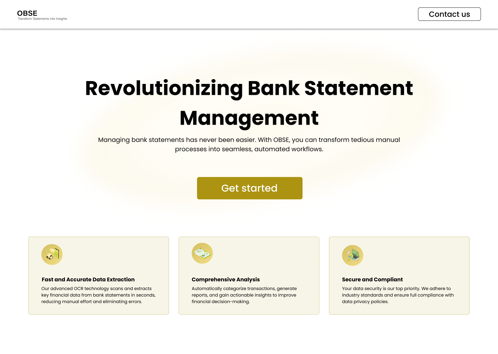
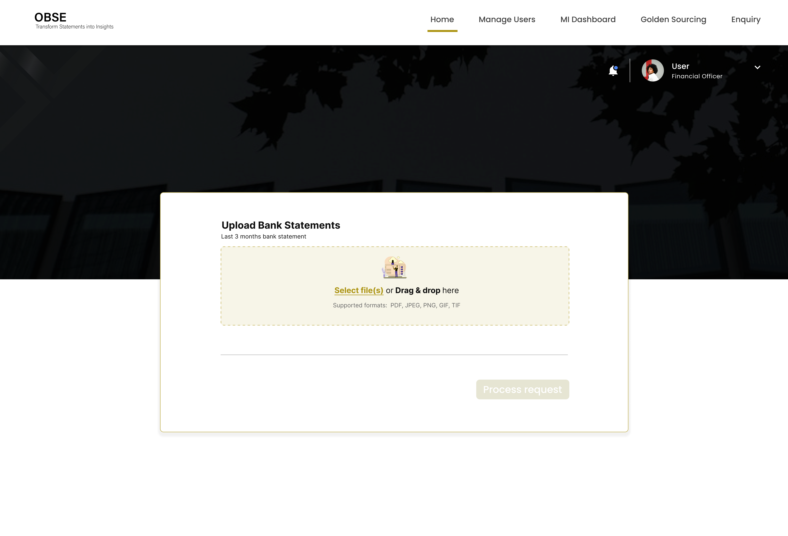
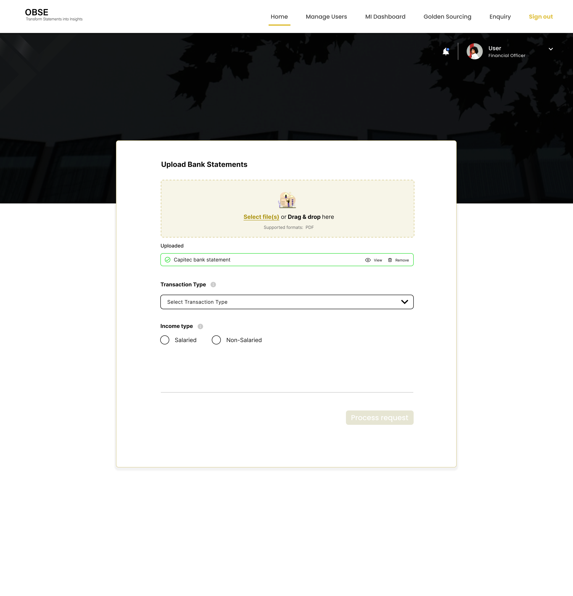
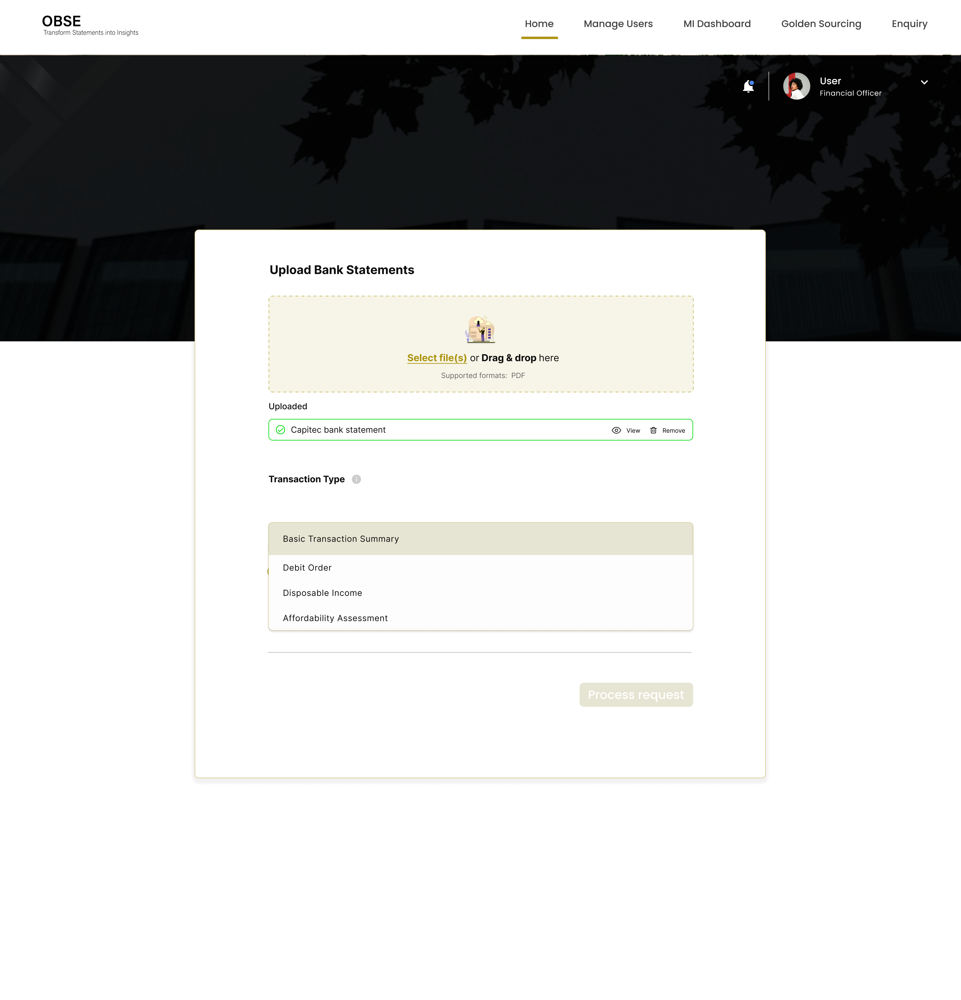
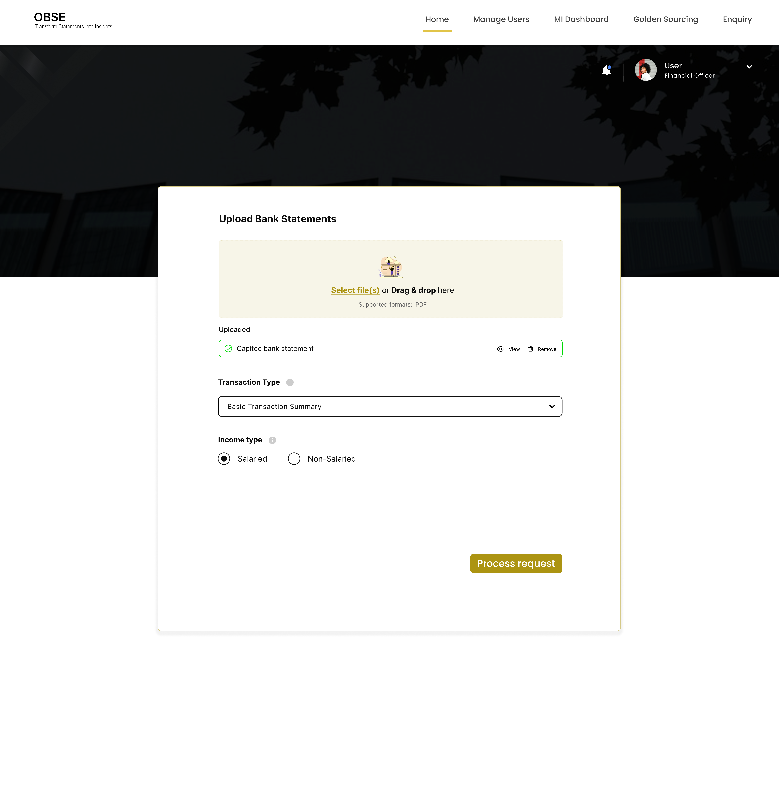
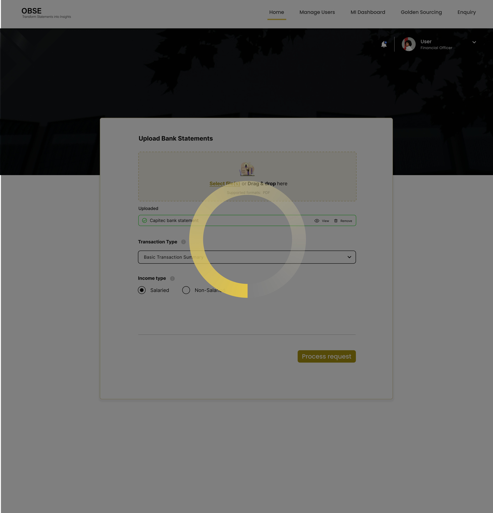

OBSE (Optimized Bank Statement Extractor)
OBSE automatically extracts and verifies financial data from bank statements. It gives businesses a fast, accurate view of income, expenses, and affordability..

01 — Project Overview
Motor retail businesses rely heavily on bank statements to assess customer affordability before approving vehicle finance. This process is traditionally manual, time-consuming, and prone to human error.
The client approached us to design OBSE — Optimised Bank Statement Extractor, an automated system that extracts, analyses, and validates income and expenses directly from a customer’s bank statement.
- Lead end-to-end UX & UI design
- Conducted user research to understand business needs, user pain points, and existing bank statement extraction challenges
- Collaborated with stakeholders and technical teams to define problem statements, scope, and success criteria
- Created user personas and mapped end-to-end user journeys for bank statement submission, extraction, and review
- Designed high-fidelity UI screens aligned with brand guidelines and usability best practices
- Collaborated closely with developers during implementation to ensure design accuracy and feasibility
- Conducted usability testing to validate workflows, ease of use, and adoption readiness
My responsibility:
02 — Problem Statement
Motor retailers spend hours manually reviewing bank statements, often dealing with:
- Unclear income patterns
- Hidden expenses not easily detected
- Fraudulent or altered statements
- Time-consuming manual validation
- Inconsistent affordability assessments
Challenges Identified
- Delays in approving vehicle applications or any product applied forx
- Risk of giving credit to unqualified buyers
- Lost sales opportunities due to slow analysis
- Time-consuming manual validation
- Increased fraud exposure
- High operational cost
This causes:
03 — Customer Value Proposition (CVP)
The goal was to create a solution that brings clarity, consistency and automation to affordability assessments.
What OBSE Promises
Accuracy
Over guesswork
Automation
Over slow manual review
Fraud detection
Over trust-based checking
Consistency
Across consultants
Speed
That improves customer turnaround time
04 — Research & Insights
To understand the workflow, I interviewed finance consultants, reviewed current affordability processes, and examined real anonymised bank statements.
Key Insights
- Income detection must be reliable: Consultants need confidence that OBSE correctly identifies salary deposits.
- Breakdown of expenses must be easy to defend: Every decision must be audit-friendly and transparent.
- Fraud is a major concern: Many statements are altered, making anomaly detection critical.
- Visual simplicity increases trust: Data-heavy tools must feel structured and predictable.
05 — Competitor Review
I reviewed existing tools and gaps across:
Traditional affordability calculators
Banking apps (FNB, Absa, Capitec financial insights)
Gap identified
With this we were reviewing on how they do it and how we can do it differently based on the clients requirements. The client knew about other tools but they wanted this system to be for them because they had alot of requirements that those tools that we analysed didn't have.
06 — Personas
Primary User: Finance & Affordability Consultant
- Reviews customer bank statements
- Approves or rejects vehicle finance
- Needs a quick, accurate breakdown
- Must comply with internal finance rules
Secondary User: Sales Consultant / Dealer Principal
- Needs affordability confirmation to continue the sale
- Checks if customer qualifies for monthly instalments
07 — UX Approach
- Relief when upload works
- Confidence when income is correctly detected
- Assurance when anomalies are flagged
- Certainty when the final affordability result is displayed
- Adding a bill → Viewing dashboard → Getting notified → Marking as paid
- Included edge cases (overdue, missed payment, partial payment)
- Log bills early
- Maintain consistent monthly payment habits
- Engage with notifications instead of ignoring them
Wireframes & Information Architecture
I designed Hi-fidelity layouts focusing on clarity, hierarchy and readability.
Journey Mapping
I mapped the emotional flow of the consultant:
Journey Mapping
Mapped the journey from
Target Behaviour
Encourage users to:
08 — Design System & Branding
I created a full micro-design system for the app.
Brand Intent
A visual identity built around:
- Trust (Old Mutual’s brand heritage)
- Modern simplicity
- Financial calmness
Components Designed
- Buttons
- Colour tokens
- Iconography system
- Notification UI components
- Billing cards
- Dashboard widgets
- Colours: Deep Blue, Gold Highlights
- Style: Modern, calming, clean
- Typography: Sans serif for readability
09 — Final UI Screens






11 — Impact & What This Project Achieved
The OBSE (Optimised Bank Statement Extractor) solution has successfully launched and is now actively used by one of the motor retail companies. The system enables reliable bank statement extraction, supported by continuous communication, hands-on assistance, and structured training to ensure smooth adoption.
- A live, production-ready OBSE platform enabling accurate and efficient bank statement extraction
- Successful rollout and adoption by motor retail company as an active client
- Consistent communication and support between the OBSE team and the client to resolve extraction failures and edge cases
- Dedicated training sessions delivered to ensure ease of use and fast onboarding
- Faster and more reliable processing of customer bank statements
- Increased client confidence through active support and clear communication